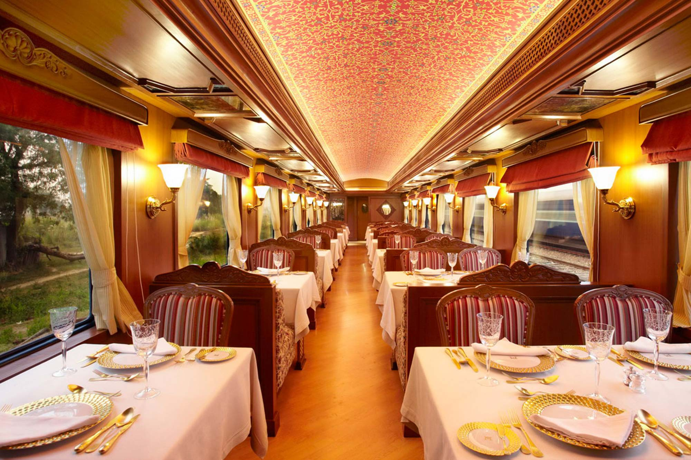
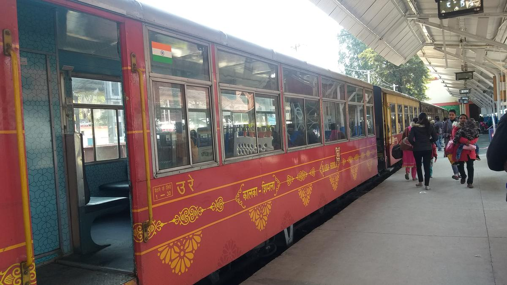
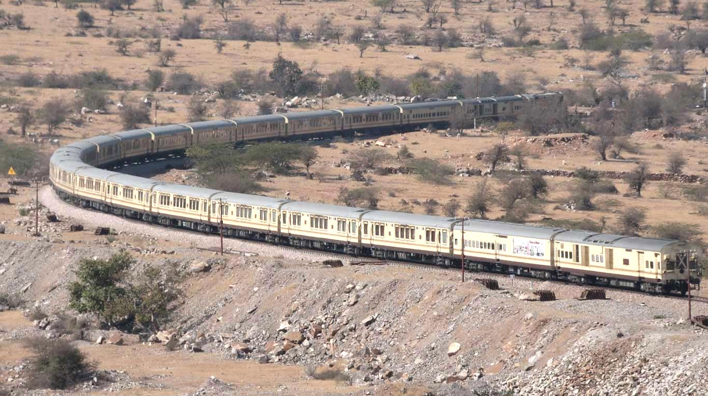
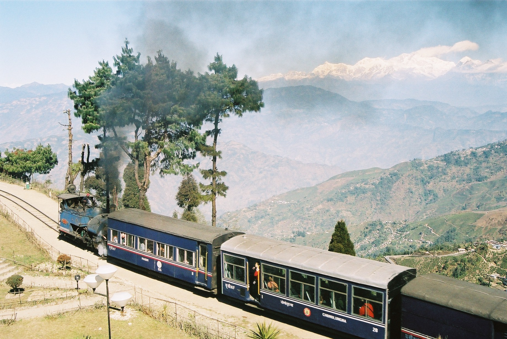
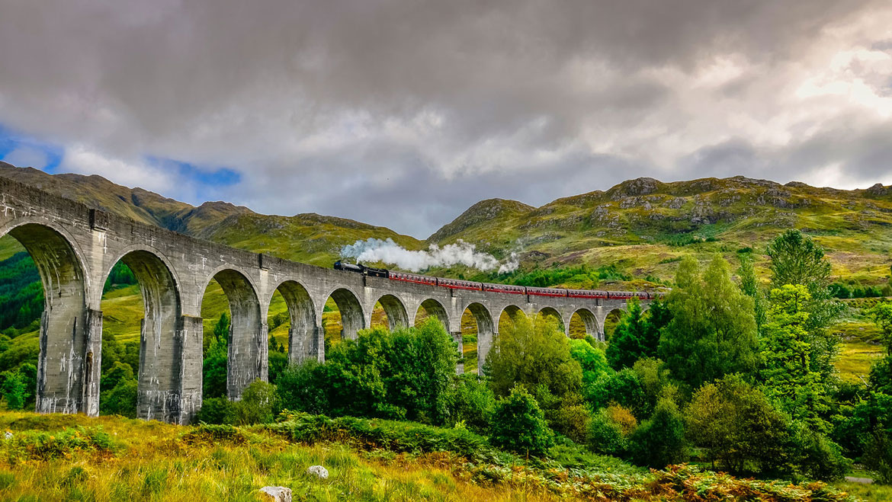
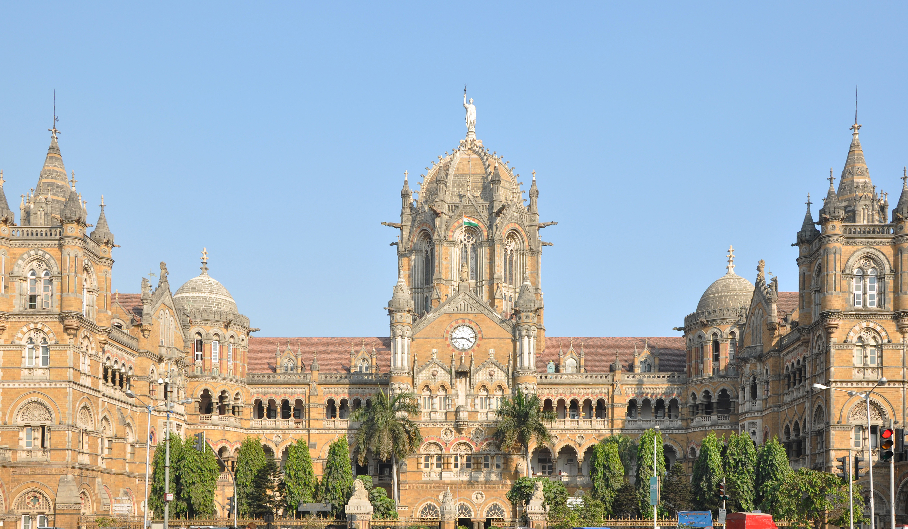

Maharajas' Express
Luxury train
It runs on 4 circuits covering more than 12 destinations across North-West and Central India, mainly centered on Rajasthan between the months of October and April.

Himalayan Queen
This rail route between Kalka and Shimla finds its name in the Guinness Book of World Records for owning the steepest altitude rise in the distance of 96 km, the scenery on the way casts a charm on you with fresh air, maple, oak and pine trees.

Jaipur-Jodhpur-Jaisalmer
Jewel of Thar Desert
The vibrant settlements of colourful mud huts and stray camels grazing in the flat desert against the rising sun can be a sight to cherish forever in life.

Toy train – Darjeeling Himalayan railway
Batasia Loop is the most famous one, known for offering mesmerizing views of the Mt Kanchenjunga and the town.

Ernakulam Kollam- Trivandrum
This odyssey is almost like complete vacation that includes crystal-clear lakes, placid backwaters, a glance into the life of the Kerala villages, lush coconut grooves, paddy field and more.

Chhatrapati Shivaji Maharaj Terminus
Indian Railway's UNESCO World Heritage Site. It is a classic fusion of Gothic art with Indian architecture.